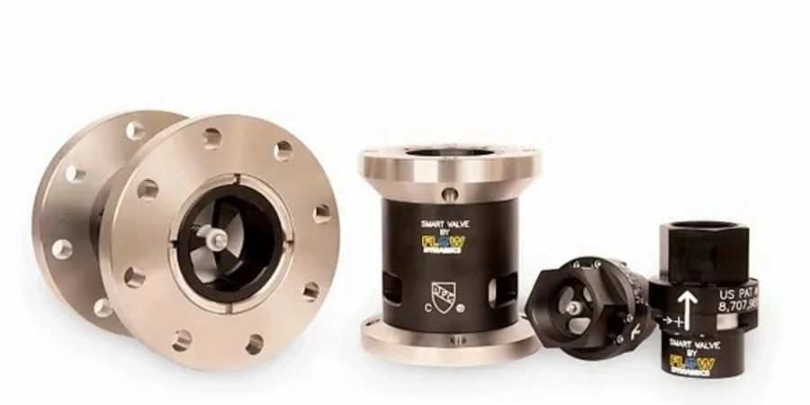
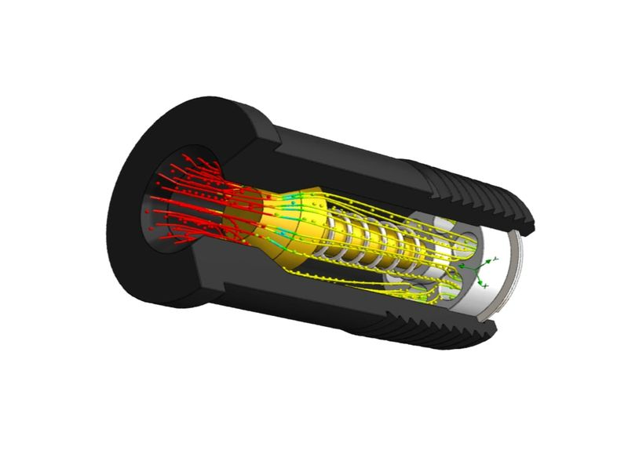
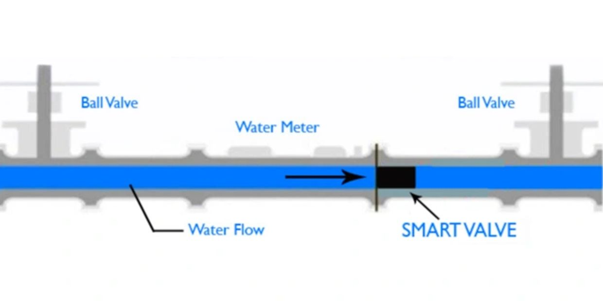

Smart Valve Introduction
Reduce Your Water Bill
Smart Valve's patented Variable Flow Control process eliminates water meter inaccuracy and excessive water consumption.
Smart Design, Smart Money
The SMART VALVE was created to resolve the inefficiencies inherent in water delivery and consumption. Our patented and NSF certified process takes established principles of fluid dynamics and applies them in a new and financially rewarding application.

Is There Air in My Water? Am I Paying for It?
In the volume of water passing through your water meter, there is also a volume of air, and your water meter can't tell the difference! To measure water consumption, the most common water meters use a method known as Positive Displacement. This method is not limited to water: it measures the total volume of both water and air.
How Does the Smart Valve Work?
The SMART VALVE compresses air, eliminating its volume before it reaches the water meter — the meter no longer measures it! You pay less for the same water usage!
The 2nd Generation Smart Valve is EXTERNALLY ADJUSTABLE for maximum performance EVERY TIME! It fine tunes the setting perfectly to your facility and has the ability to adjust to future system changes without ever having to turn off your water again. No other product has this patent pending feature.
Specifications
Valves are available in all standard plumbing sizes. The valve is made in double flanged and double threaded (female NPT) configurations according to your system pipe size.
The 2nd Generation Smart Valve has a much larger ID than older designs to match pipe flow capacity.
Applications include: hotels, apartments, restaurants, laundromats, car washes, food/beverage, manufacturing, landscape irrigation, and many more.

Installation
The SMART VALVE™ is designed to be installed on the USER side of the water meter.
Installation should be performed by a licensed plumber.
Smart Valve is a 'Set it and Forget it' device. No maintenance, no operational costs and comes with a 10-year warranty.
See Installation Instructions